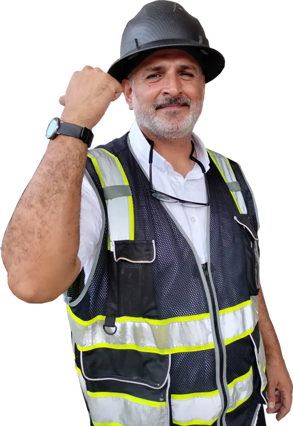

Garantía de impermeabilización: qué es un escudo registrado y qué preguntar antes de contratar

«Le doy garantía» es una frase fácil de decir. La pregunta es quién responde cuando aparece una gotera dos años después, y con qué documento lo demuestras. Hay una gran diferencia entre una promesa verbal y una garantía registrada.
Tres tipos de garantía
- Garantía verbal del maestro: depende de que lo encuentres y de que quiera volver.
- Garantía del producto: cubre defectos de fabricación del material, pero normalmente no la mano de obra ni los daños por mala aplicación.
- Garantía de sistema registrada: respalda el sistema aplicado en tu losa, queda registrada a tu nombre y tiene un canal formal para hacerla efectiva.
Cómo funciona el escudo de Imptek
Imptek, fabricante ecuatoriano de sistemas de impermeabilización, tiene un servicio de garantía en el que el propietario se comunica con una línea de garantías, indica sus datos y el número de su escudo, y se le asigna un socio técnico para la inspección. Si se confirma que el daño está cubierto, el propietario no paga la reparación. Además, el escudo puede transferirse al nuevo dueño si la propiedad se vende. Los años de cobertura y las condiciones dependen del sistema aplicado.
Preguntas que debes hacer antes de contratar
- ¿Qué sistema exacto me van a aplicar y de qué fabricante?
- ¿La garantía cubre material y mano de obra, o solo el material?
- ¿Cuántos años cubre y qué la anula?
- ¿Queda registrada a mi nombre? ¿Puedo transferirla si vendo?
- ¿Me entregan fotos de cada capa y un informe final?
- ¿Hacen prueba de agua antes de entregar?
Si la respuesta a la mayoría es «no» o «no sé», estás comprando un pintado, no una impermeabilización.
Lo que hacemos en AL-TERKAWI CONSTRUYE
Trabajamos con sistemas completos de fabricante, documentamos cada capa, hacemos prueba de agua y entregamos el registro de garantía. Y sumamos nuestra propia garantía de ejecución: si la prueba muestra una filtración en el área tratada, la corregimos antes de cobrar el saldo.
Siga leyendo

¿Quieres tu losa con garantía registrada?
Sistema completo, fotos de cada capa, prueba de agua y garantía a tu nombre.

Arquitecto en Guayaquil, Samborondón y Daule. Impermeabilización de losas y cubiertas con garantía, diseño y obra.